UIAlertController
Displaying UI Alert when Click on a button
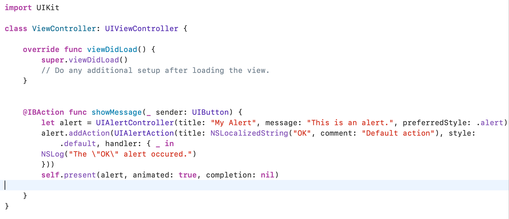
The above code is the final code for the project
STEP 1: Creata the new project and give the organizer name and click next.
STEP 2: Select Single View and click next.

STEP 3:In main.storyboard place the button from object library and drag & drop the button into the storyboard and rename as "Hello World" and add constrients to them.
STEP 4:Create the connectivity between them.
STEP 5:Name the button as "showMessage".
STEP 6:Then enter the above line on code.
STEP 7:Run the code and see the result the result will be like.
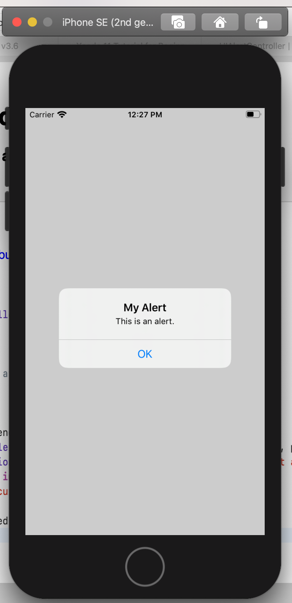
Creating multiple views
Creating a multiple views is made simple Only Few steps and easy
Lets begin
STEP 1:create a new xcode project
STEP 2:create the single view application and click next
STEP 3:now open the main.storyboard
STEP 4:Drag and drop the button from the object Library and rename as "go to second screen"
STEP 5:Again newly open the object libraryand drag and drop the "view Controller into the main.storyboard
STEP 6:Drag and drop the button from the object Library into the second view controller and rename as " go to first screen"
STEP 7:now make the connection from the button from the first viewcontroller to the second view view controller
STEP 8: now repeat the process from the second view controller
STEP 9:now give color to the both view conroller
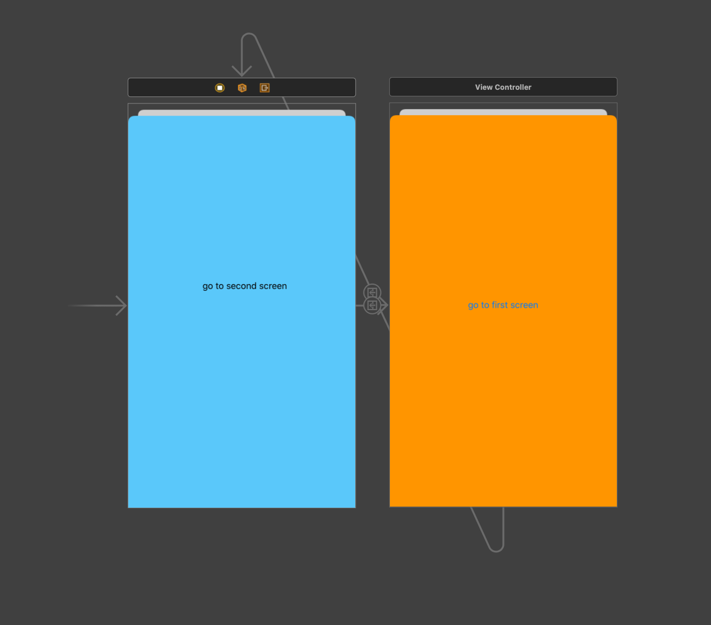
STEP 10:now RUN the program yuo will see the output as:
There is no coading fo that:
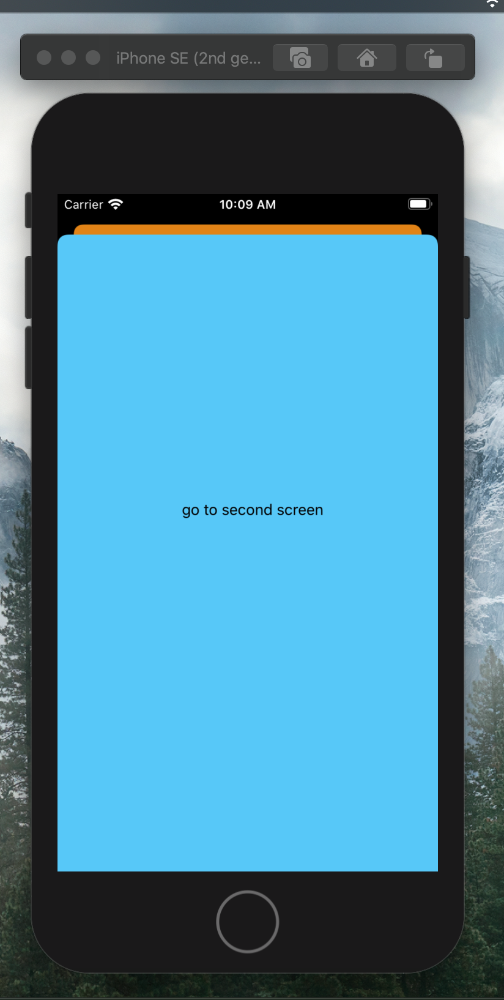
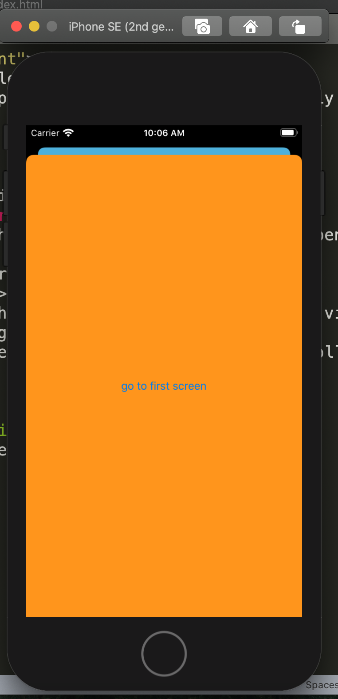
Open PDF
Easy way to open a PDF on clicking on a button
STEP 1:Create a new Xcode project
STEP 2:name the project and click next.
STEP 3:In the main.storyboard draga and drop the button into the view controller and rename as open pdf.
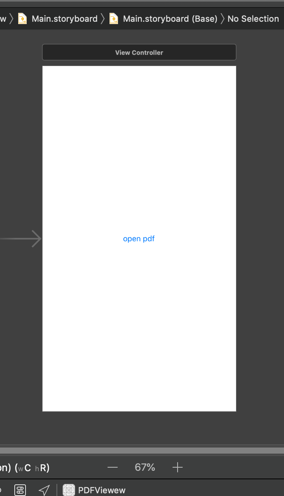
STEP 4:The code to be written in the ViewController.Swift is given Bellow.
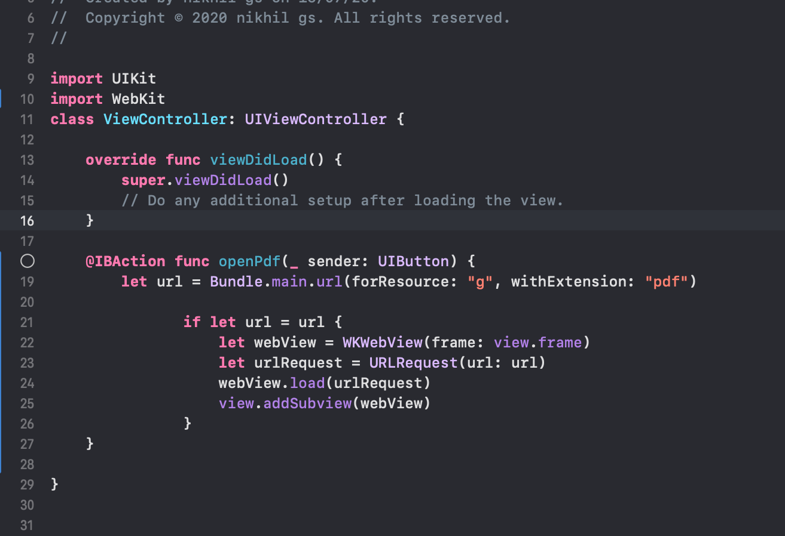
STEP 5:Give the connectivity between the Button to the ViewController.Swift
STEP 6:Wrie the above code in ViewController.Swift.
STEP 7:Drag and drop the PDF file into the project.
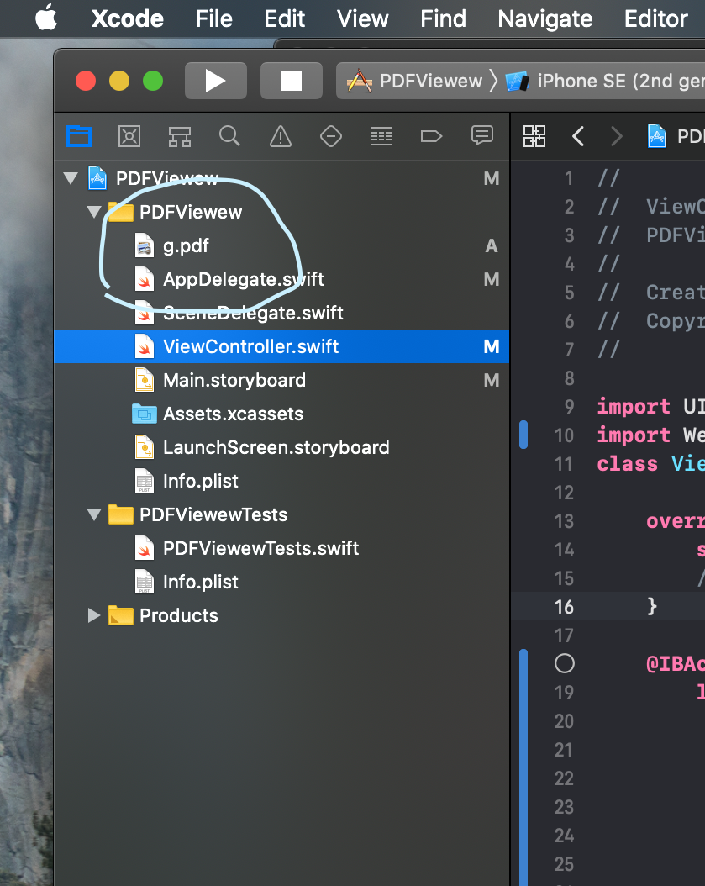
STEP 8:In the code change the file name to your PDF file name.
Thats it you are done.
The output is
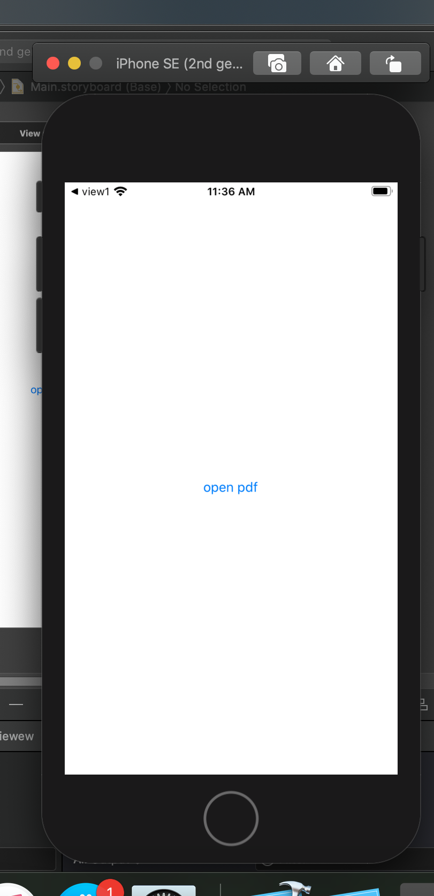
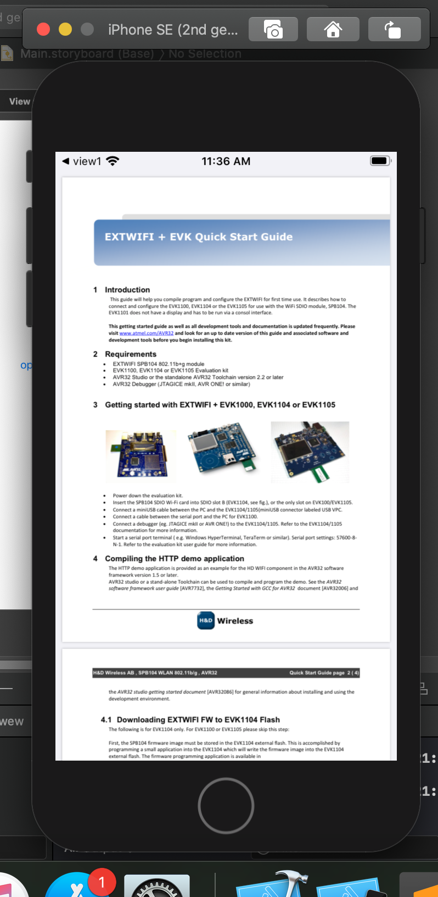
Open camera
Easy way to open a Camera on clicking on a button
STEP 1:Create a new Xcode project
STEP 2:Name the project and chose single view application and click next.
STEP 3:Drag and drop the button from the object library to the ViewController in Main.storyBoard
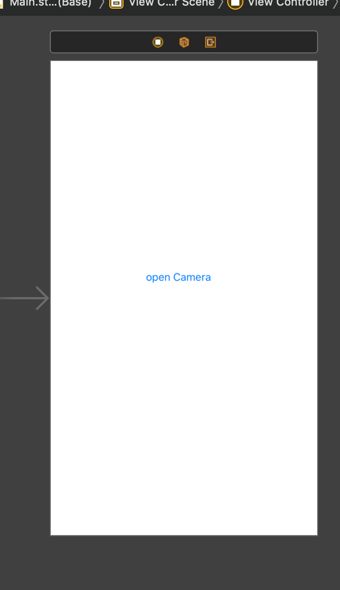
STEP 4:Rename as "open Camera."
STEP 5:In ViewController.swift code the below give code before that give the connectivity from
button to the viewController.swift .
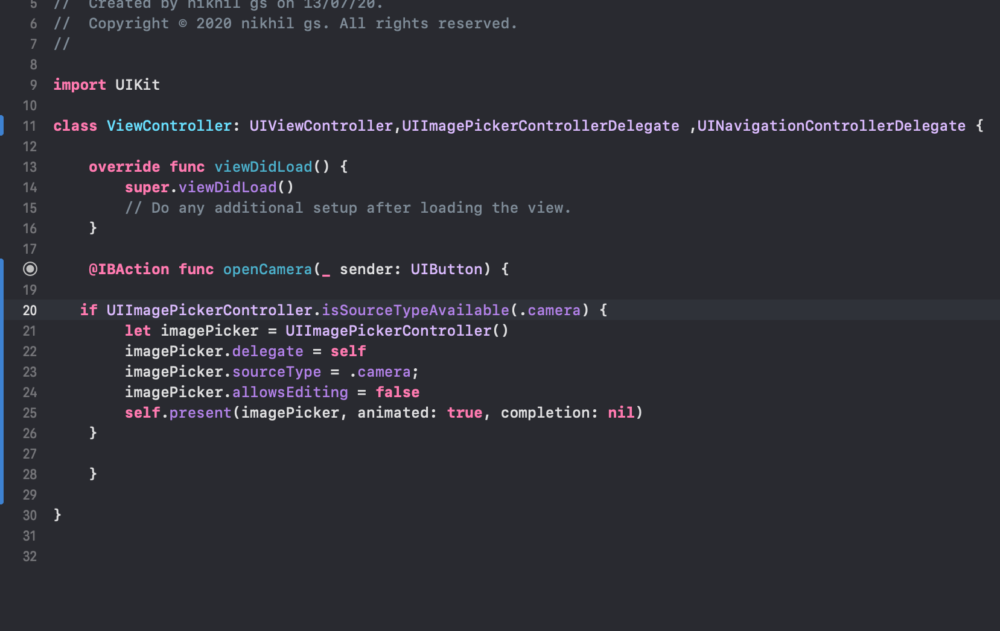
STEP 6:Give constraints to the above given button
That's it you RUN the program you will see the output
"IMPORTANT"
RUN THE PROGRAM IN THE REAL DEVICE THEN ONLY YOU CAN SEE THE CAMERA OPENING ON CLICK ON A BUTTON